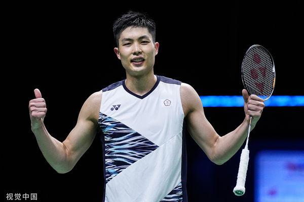
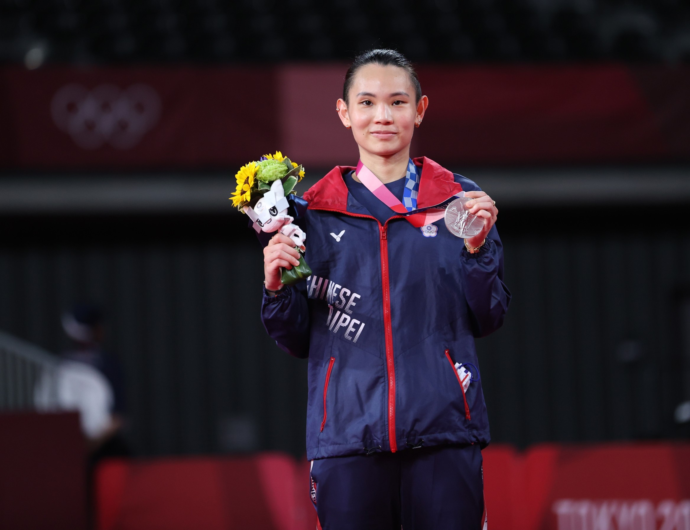
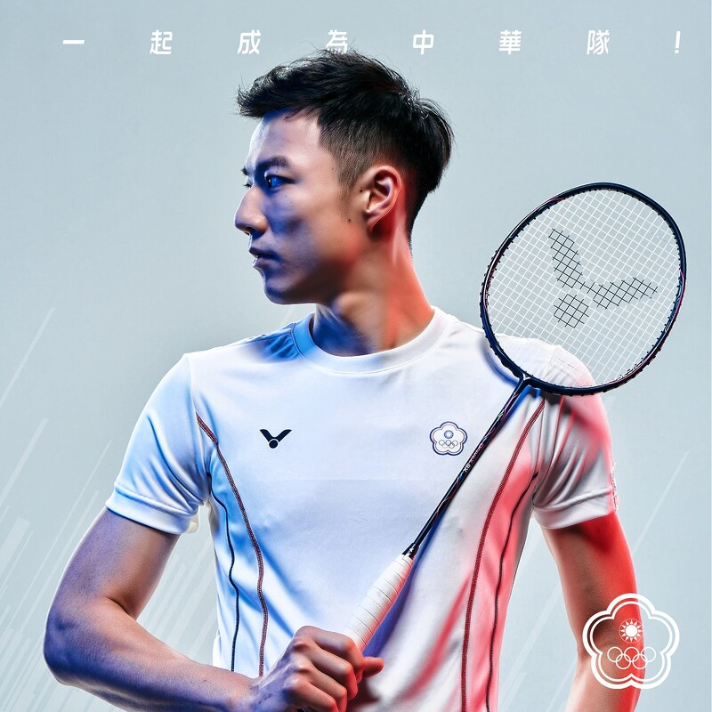
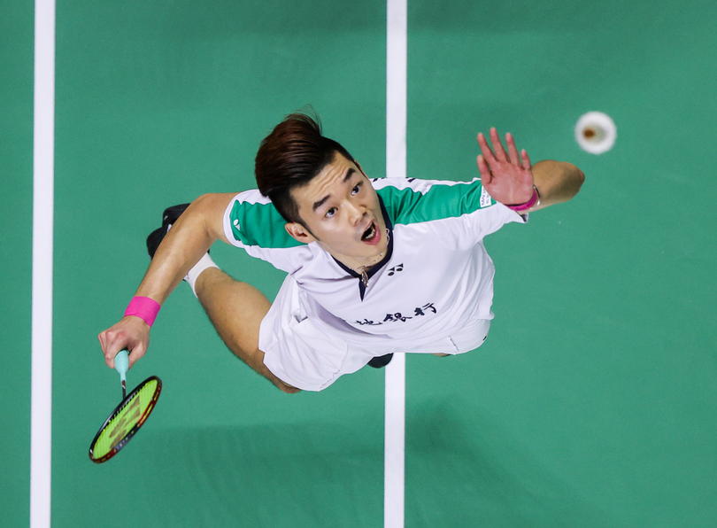
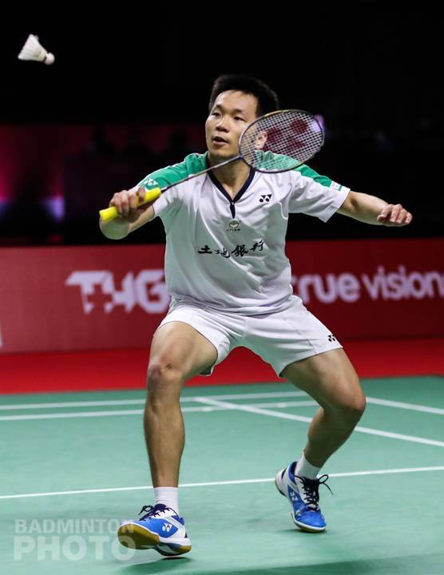
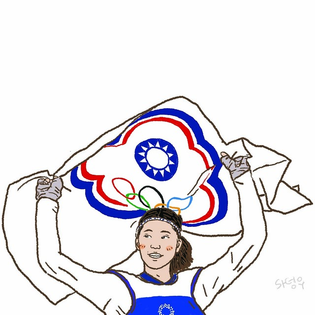
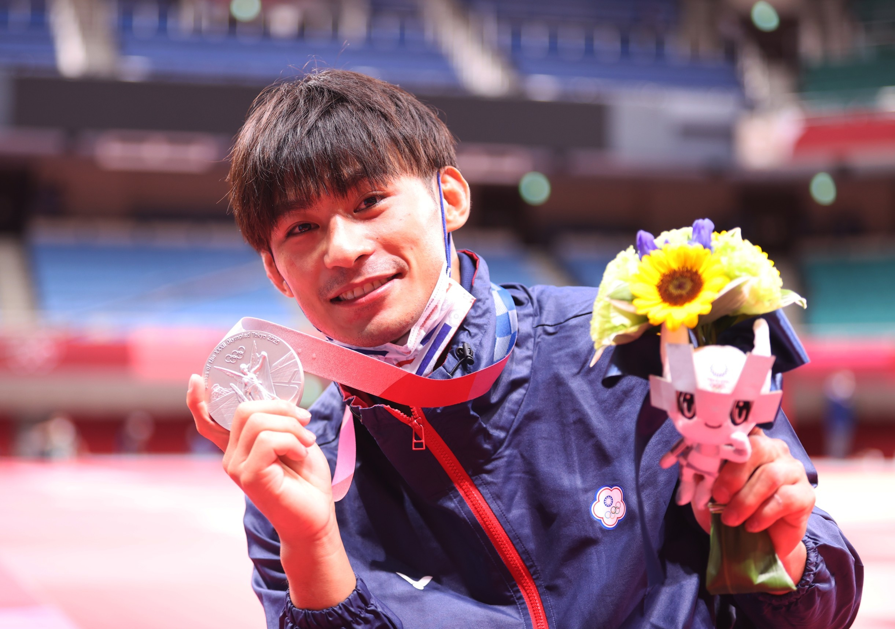
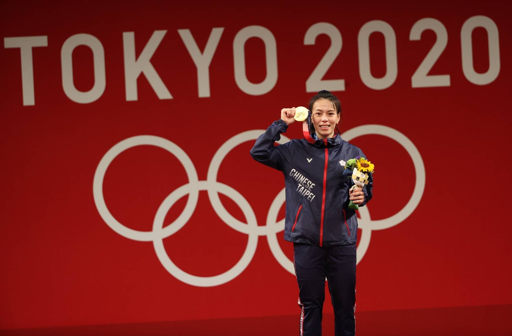
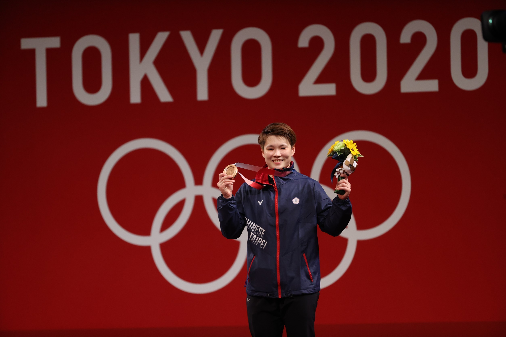

周天成。
在 2014 年法國羽球超級賽奪冠後，周天成成為台灣第一位在世界羽聯超級系列賽奪冠的男單選手
2019 年於超級 1000 系列印尼羽球公開賽男單決賽奪下冠軍，同年 8 月 6 日積分超越中國石宇奇升上世界第二，創下生涯最高排名紀錄，亦創下台灣本土男單選手最佳紀錄。
現時世界男子單打羽球排名第 14 位。
Badminton



戴資穎，台灣首位在羽球女子單打項目世界排名第一的運動員。
自幼受到父親影響而熱愛羽球，。 2016 年香港公開賽奪冠後女子單打世界排名登上第一位，更於 2018 年亞洲運動會奪下台灣亞運史上第一面羽球金牌。
世界第一週數從第一次登頂的 2016 年 12 月 1 日，至 2019 年 10 月 21 日累計共 141 週。
奧運會方面， 贏得 2020東京奧運銀牌，為我國首面羽球單打項目奧運獎牌。
現時世界女子單打羽球排名第 5 位。
王子維，
小一開始接觸羽球。2014年紐西蘭羽球大獎賽獲得生涯首座大獎賽冠軍；2017年臺北世界大學運動會，在男子單打項目團體及皆獲得金牌。2018年雅加達亞運與隊友聯手拿下團體銅牌。
現時世界男子單打羽球排名第 26 位


王齊麟，專攻雙打項目，世界排名最高曾達第四位。
2019 年由於原搭檔陳宏麟決定從國際賽中退役，
王齊麟遂改與李洋搭檔。王齊麟與李洋在 2020 東京奧運，贏得羽球男子雙打金牌。
現時世界男子雙打羽球排名第 10 位。
李洋於 2018年亞運羽球男子雙打比賽中與搭檔李哲輝奪得銅牌，同年底則改與王齊麟搭檔，爭取奧運積分。
李洋及王齊麟在 2020 東京奧運羽球男子雙打比賽，取得臺灣史上首面羽球奧運金牌。
現時世界男子雙打羽球排名第 10 位。
Table Tennis
莊智淵，綽號臺灣桌球教父，於 2003 年 12 月到達生涯最高的世界排名第 3 ， 2020東京奧運，莊智淵第五度代表中華隊征戰奧運，分別在男子個人及男子團體進入 16 強及 8 強後遭到淘汰。

林昀儒，臺灣最年輕的世界桌球錦標賽國手之一 2019年剛滿 18 歲的林昀儒參加捷克桌球公開賽，獲得了個人生涯首座世界職業桌球巡迴賽冠軍。 並在2020東京奧運與搭檔鄭怡靜，贏得混雙銅牌。
鄭怡靜，2016 年 8 月，首度參賽里約奧運桌球比賽， 在女子單打項目接連擊敗白俄羅斯選手及韓國選手後晉級， 但在八強賽中不敵上屆奧運會金牌、世界排名第五的中國選手李曉霞，雖無緣四強，卻已創造台灣本土女子選手最佳紀錄。 2020東京奧運與搭檔林昀儒，贏得混雙銅牌。
Taekwondo

羅嘉翎，我國首位在世界青少年跆拳道錦標賽完成連霸的女將。 於 2021 年亞洲區跆拳道資格賽取得 2020 東京奧運會女子 57 公斤級參賽資格，並獲得銅牌的佳績。 也成為我國歷屆以來挑戰這個量級最年輕的選手。
Swimming
王冠閎，2019 年王冠閎在 8 月世青賽以 1 分 56 秒 48 達 200 公尺蝶式奧運 A 標，提前收下東奧門票， 10 月全運會決賽繳出 1 分 55 秒 72 的成績奪金，除再次達標外，也同時改寫自己所保持的全國紀錄。 2020 東京奧運男子 200 公尺蝶式預賽，以 1 分 54 秒 44 再次改寫全國紀錄。
Judo

楊勇緯，臺灣男子柔道運動選手，排灣族。 楊勇緯世界排名 25 名，是我國排名最高選手 2020東京奧運拿下男子 60 公斤級銀牌，為我國首面柔道項目奧運獎牌。
Weightlifting


郭婞淳是台灣原住民阿美族， 2019 年，在全大運以總和 225 公斤摘金後，郭婞淳參加該年亞錦賽，為她參加的第三場東京奧運積分賽， 最終以抓舉 106 公斤、挺舉 137 公斤、總和 243 公斤奪金，三項成績皆打破女子 59 公斤級世界紀錄。 代表中華隊參加 2020東京奧運女子 59 公斤級，順利拿下金牌。
陳玟卉原先為田徑三鐵選手，後因不喜歡跑步因此於國二時改練舉重。 陳玟卉原先為女子 71 公斤量級前全國紀錄保持人，後來降至 63 公斤量級出賽世界大學舉重錦標賽並贏得銅牌。 代表中華隊出賽 2020東京奧運女子 64 公斤級項目，贏得銅牌。